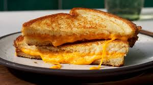

Grilled Cheese

A grilled cheese sandwich is one of my favorite comfort foods. This is super easy to make and is so delicious. Pairs well with a tomato soup.
Ingredients
- 2 Slices of Bread
- 2 Tbsp Salted Butter
- 1 Slice of Cheddar Cheese
- 1 Slice of Pepper Jack Cheese
Instructions
- Heat up a skillet on medium heat.
- Butter each side of the slices of bread.
- Place a slice of bread on the skillet.
- Place each slice of cheese on the bread.
- Cook for about 2 minutes until the bread is golden brown, then flip.
- Cook the other side for another 2 minutes or until golden brown.
- Transfer to a plate and enjoy!
Home